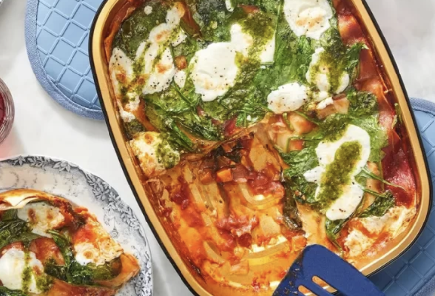

Canelones de Verdura

Ingredientes Generales:
- 2 cebollas moradas grandes o 4 pequeñas.
- 1 diente de ajo.
- 100 gr de queso rallado.
- Sal y pimienta.
- Aceite de oliva.
- Salsa Blanca.
Todos sabemos que las pastas son comidas infaltables en nuestro menú cotidiano, son ricas, económicas, rendidoras, siempre cumplen! Así es el caso de estos canelones de verdura y de los otros también, porque se pueden rellenar con múltiples opciones y se convierten en una comida muy rica, rendidora y variada!
Tres opciones de relleno para canelones de verduras
Canelones rellenos de espinaca y queso
- Lavar cuidadosamente aprox. 600 gr de espinacas y secarlas bien.
- Luego cortar la cebolla, 1 morrón rojo y el ajo bien chiquito. Saltear en una olla con un chorrito de aceite de oliva. Cuando estén transparentes agregar las espinacas y saltear por un par de minutos hasta que la espinaca se “desmaye”. Retirar del fuego.
- Una vez que esté tibio agregar 3 huevos cocidos previamente y picados, el queso parmesano rallado y la salsa
Canelones de zapallo y almendras
- Cocinar 1 zapallo mediano para luego hacer un puré con el mismo.
- Luego cortar la cebolla y el ajo y saltear en una olla con un chorrito de aceite de oliva en la base. Cuando estén transparentes agregar el puré y saltear por un par de minutos. Hasta que todo esté todo bien integrado.
- Retirar del fuego y salpimentar. Una vez que esté tibio agregar un puñado de almendras, la salsa blanca y queso mozzarella rallado.
Canelones con relleno de maíz dulce
- Colocar 80 gr de mantequilla en una sartén y cuando se derrita agregar la cebolla picada lo más fino posible junto con una pizca de sal. Cuando esté transparente agregar 2 latas de maíz dulce escurridas.
- Mezclar bien todo hasta que quede bien integrado. Una vez que lo esté agregar 4 cucharadas soperas de harina y revolver unos minutos.
- Por último agregar 300 ml de leche poco a poco. Revolviendo constantemente para que no se pegue y cocinar por unos minutos hasta unificar.
Como preparar los canelones de verdura definitivosComo preparar los canelones de verdura definitivos
- 1. Armar los canelones de verdura colocando el relleno elegido sobre los panqueques y enroscar cada uno con cuidado de no romperlos.
- Para la presentación colocar un poco de salsa en la base de una fuente, luego los canelones armados y de forma opcional colocar por arriba abundante salsa. Decorar con queso rallado por arriba y gratinar en el horno por 10 minutos.